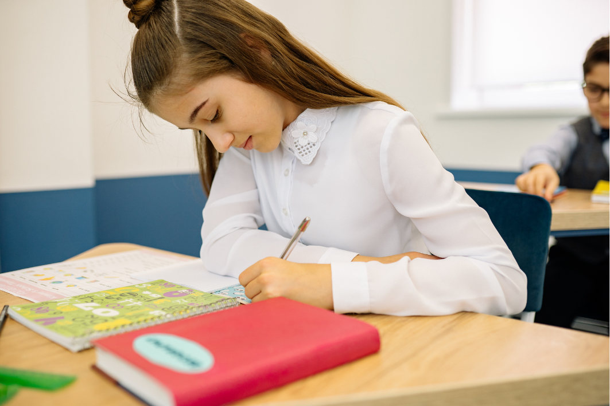

In several parts of the Middle East, girls have historically been discouraged from entering the workforce and pursuing careers that are beyond the traditional expectations. Such social limitations and various misconceptions about a woman’s capabilities have prevented women from pursuing their desired careers.
RISE is a youth-led organization that is dedicated to empower and educate girls by providing them with the skills, resources, and confidence needed to pursue their desired career paths. Through our mentorship, education, and community focused initiatives, we aim to remove the social barriers for the future generations and redefine what is possible for women in our region.
We envision a future where girls will not be told “no” but rather be encouraged to lead, innovate, and thrive in their desired career. We hope to create an accessible platform that will assist and empower young girls to enter the workforce while challenging the norms of society.
Contact Us